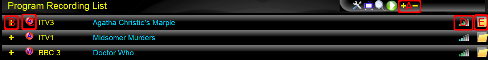
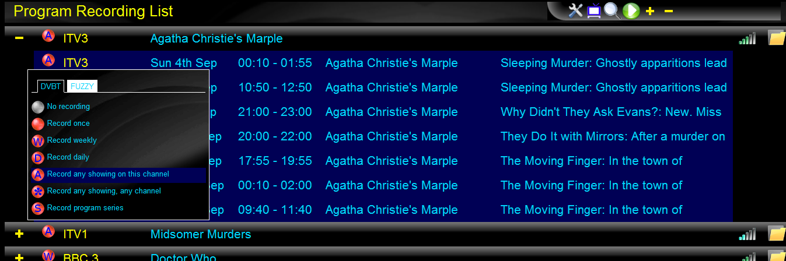
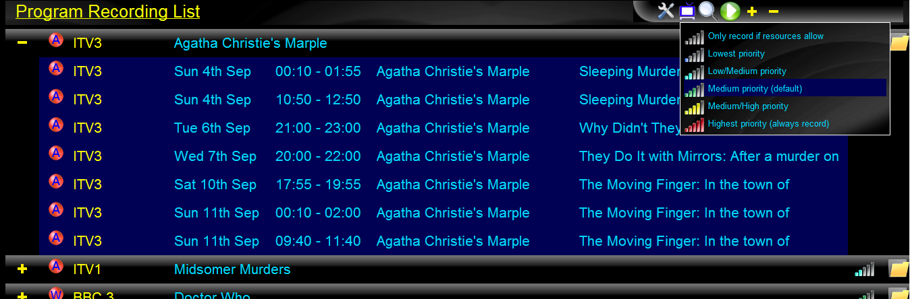
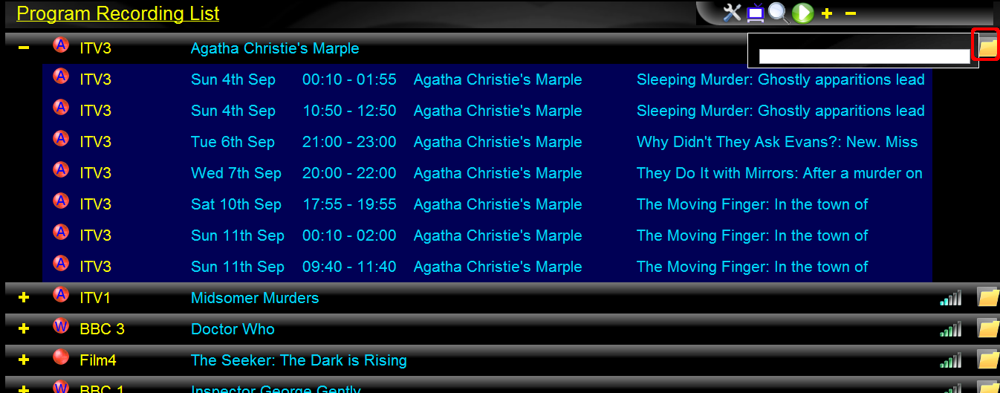

Click the "recordings" icon in the toolbar to bring up the list of scheduled recordings window.
When a program recording is selected using the "record select menu", the details of that recording request are saved in the database. This window shows all of these recording requests as a list of headings. Under each heading is the list of actual programs that will be recorded due to this request.
The list is ordered so that recording requests that currently have no programs scheduled to record are shown in grey at the end of the list.
Selecting the recording "bubble" brings up the recording select menu for this recording request.
Changing the setting will update the recording request (this will be reflected in the EPG listings when you switch back).
Selecting the recording priority icon brings up the window to allow you to modify recording priority.
The priority sets the "effort level" that the scheduler uses when trying tro schedule all the recordings. High priority recordings are scheduled before lower priority recordings.
Selecting the recording "folder" icon brings up the window to allow you to modify the path for the recording.
The default is an empty path, in which case the built in default of the scheduler Perl script is used. Alternatively you can specify a path for each recording request. Note that you must use the defined variables to ensure each recording filename is unique (if you specify a fixed [non-variable] file path then each new recording will overwrite the last).
The list of defined variables is:
Four digit year (e.g. 2011) of recording start date.
Two digit month with leading zero of recording start date.
Two digit day with leading zero of recording start date.
Two digit hour with leading zero of recording start time.
Two digit minute with leading zero of recording start time.
Two digit second with leading zero of recording start time.
Shortcut to using Y, m, d variables individually (e.g. results in 20110901 for September 1st, 2011)
Shortcut to using H, M, S variables individually (e.g. results in 173500 for 17:35:00)
Shortcut to using Y, m, d, H, M, S variables individually (e.g. results in 20110901173500 for September 1st, 2011 at 17:35:00)
Broadcast genre string. This is usually not much use as it only conveys 'Film', 'Show', or 'News'.
If the program is part of a series, then this variable is set to 'Series X'.
If the program is part of a series, then this variable is set to the series number e.g. 'X'.
If the program is part of a series, then this variable is set to 'Episode Y'.
If the program is part of a series, then this variable is set to the episode number e.g. 'Y'.
Set to the TVAnytime series string (f present).
Set to the TVAnytime program string (f present).
Set to the program title (e.g. 'The Big Bang Theory').
This is the "minor title" or extra details string extracted from the program description.
Set to a meaningful name for the program. Default is to the use the title.
Set to the top-level path for recording all audio files. This is initialised when the application is installed.
Set to the top-level path for recording all video files. This is initialised when the application is installed.
Automatically set to video_dir or audio_dir depending on the file type.
The default file paths set up are:
$video_dir/$title/$tva_series/$YmdHMS-$name.ts
$audio_dir/$title/$series/$YmdHMS-$name.mp3
Note the use of $name to select the above variables.
As an example, if you had a series of crime stories by Agatha Christie that you were recording, you could set the recording's path to:
$dir/Crime/Agatha Christie/$YmdHMS-$name.mp3
If you had installed the application to record audio to /var/lib/quartzpvr/audio (for example), then a recording of 'The Moving Finger' on September 1st 2011 at 17:35:00 would be saved as:
/var/lib/quartzpvr/audio/Crime/Agatha Christie/20110901173500-The Moving Finger.mp3